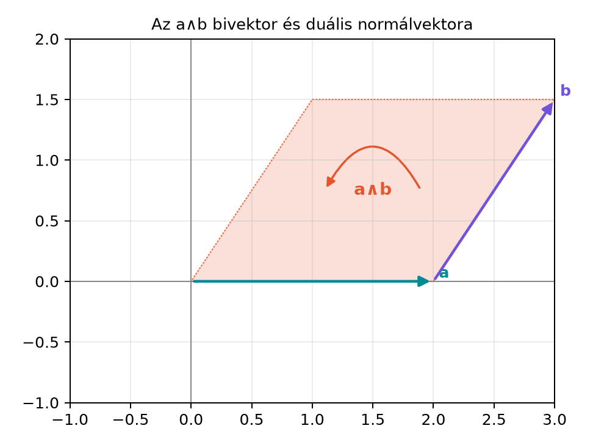
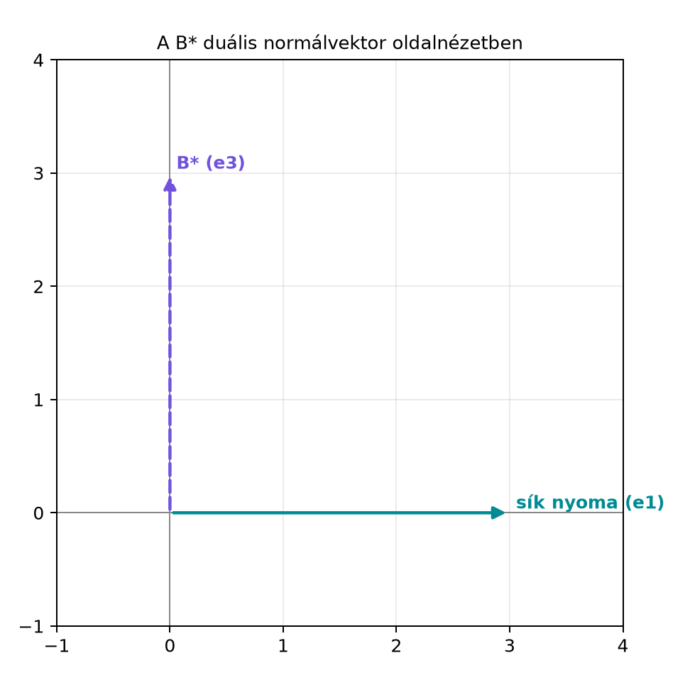

8.2 Dualitás: bivektor ↔︎
normálvektor, a × b = −I(a∧b)
8.2.1 Motiváció
A klasszikus vektoriális szorzatnak van egy kellemetlen tulajdonsága:
az eredmény mindig merőleges a két szorzótényezőre, ezért a
háromdimenziós térben minden irányított síkot egyetlen
vektorral kódolunk el. Ez a kódolás azonban összekeveri a „sík” és
„vektor” fogalmát, és tükrözéskor pszeudovektorként viselkedik.
A geometriai algebrában az irányított síkot az
bivektor írja le, nem pedig egy vektor. Ebben az alfejezetben
megmutatjuk, hogy a kettő között a pszeudoszkalárral való szorzás, azaz
a dualitás teremt kapcsolatot: az
bivektorból a
vektor lesz, és ez éppen a klasszikus
vektoriális szorzat. Így a vektoriális szorzat nem „eltűnik”, hanem a
bivektorok dualitásaként kapja meg a pontos geometriai helyét.
8.2.2 Szemléletes kép
Képzeljük el az
és
vektorok által kifeszített irányított síkot. A bivektora:
A pszeudoszkalár
,
és
Tehát a bivektor duálisa éppen az a vektor, amely merőleges a síkra,
és a jobbkéz-szabálynak megfelelően mutat. A következő ábra a síkot
jeleníti meg, a normálvektora pedig a rajz síkjából kifelé mutat.

Az a∧b bivektor és duális normálvektora -
Az a→b irányítású síkduál B* = −I(a∧b) merőleges a síkra; a rajz
felülnézetből mutatja a síkot, a normálvektor a rajz síkjából kifelé
mutat.

A B* duális normálvektor oldalnézetben -
A B=e12 sík oldalnézetben az e1 tengelyre zsugorodik; a síkra merőleges
B* az e3 irányban mutat. A felülnézeti ábrán ez a síkból kifelé mutató
nyíl.
A derékszögű koordinátarendszerben az
bivektorhoz tehát az
normálvektor tartozik. Ezt általánosítjuk most.
8.2.3 A duális definíciója
Definíció. A G(3) algebrában egy
multivektor duálisa a következő:
Mivel
és
,
ezért
.
Így G(3)-ban
mert a pszeudoszkalár G(3)-ban minden elemmel felcserélhető.
Speciálisan egy
bivektorra:
Ez a
egy vektor. Általában, ha
homogén
-fokú
elem, akkor
fokszáma
:
a pszeudoszkalárral való jobb oldali szorzás a penge komplementerét
adja. Ez nem hárommal való eltolás és nem modulo 2 szerinti redukció.
Például
Megfordítva, ha
egy vektor, akkor a duálisa
bivektor. Ez a vektorra merőleges sík egyik irányított reprezentánsa;
a normálvektorral konzisztens, a kifeszítő vektorok sorrendjével azonos
orientációjú síkbivektor ennek az ellentettje,
.
A dualitás tehát bivektort normálvektorba, vektort pedig a rá
merőleges bivektorba visz; az irányítás előjelét mindig a
konvenció rögzíti.
Megjegyzés (konvenciók). Egyes források a duálist
-ként
vagy
-ként
definiálják. Ebben a könyvben a
jelölést használjuk. A források közötti előjelkülönbségek nem
változtatják meg a geometriai tartalmat, de a képleteket igen, ezért
mindig érdemes tudni, melyik konvenciót használjuk.
8.2.4 Bivektor és normálvektor; sík
egyenlete duálissal
Legyen
egy origón átmenő síkot reprezentáló bivektor. A duálisa
a sík normálvektora. Itt szükséges, hogy
,
azaz
és
lineárisan független legyen. Ha
és
párhuzamos (vagy valamelyikük nulla), akkor
és
;
az
és
egyenlet minden
-re
teljesül, tehát nem egy adott síkot ír le. Az ilyen elfajult bemenetet
nem tekintjük síknak.
Valóban, ha
akkor a korábbi koordinátás felírásból
Erre alkalmazva a
-t:
ezért
Ebből azonnal látszik, hogy
és
,
mert a megfelelő koordinátaszorzatok összege kiesik. Például:
A duálisból visszafelé a
összefüggésből
adódik, nem
.
Az
bivektor ugyanazt az orientálatlan síkot reprezentálja, de ellentétes
orientációval.
A sík egyenletét így kétféleképpen írhatjuk fel. Ha a sík
normálvektora
,
akkor a sík pontjai:
Ha viszont a síkot a
bivektorral adjuk meg, akkor ugyanez a feltétel:
A kettő ekvivalens:
,
mert
.
Az
bivektor ugyanazt az orientálatlan síkot reprezentálja, de ellentétes
orientációval; a
választás biztosítja, hogy
legyen. Ezzel a dualitás a sík két lehetséges megadását kapcsolja
össze.
8.2.5 A vektoriális szorzat
levezetése
Tétel. A klasszikus vektoriális szorzat a külső
szorzat duálisa:
Bizonyítás. Használjuk a bivektor koordinátás
alakját. Ahogy fent láttuk:
Szorozzuk balról a
pszeudoszkalárral. A bázispengékre:
Így
Ez éppen a hagyományos vektoriális szorzat koordinátás alakja:
Tehát a két művelet megegyezik. ∎
A levezetésből az is látszik, hogy a vektoriális szorzat csak azért
„vektor”, mert G(3)-ban a bivektor duálisa vektor. A bivektor
maga az irányított terület, a vektoriális szorzat pedig ennek a
normálissal való kódolása.
8.2.6 Kidolgozott példa
Legyen
Először számítsuk ki a külső szorzatot:
A
,
ezért:
A
,
tehát:
Most vegyük a duálist:
Felhasználva, hogy
adódik:
Számítsuk ki a klasszikus vektoriális szorzatot is. Az
,
vektorokra:
tehát
Valóban megegyezik a
eredménnyel.
8.2.7 A hármas vegyes szorzat
A dualitással a hármas vegyes szorzat is kompakt algebrai alakot
kap.
Tétel.
Bizonyítás. Mivel
,
ezért
A pszeudoszkalár mindennel felcserélhető, ezért
A vektor és bivektor geometriai szorzata egy vektor és egy trivektor
összegére bomlik:
Az
szorzat bivektor, tehát skalárrésze nulla. Így csak a trivektor járul
hozzá:
Mivel
trivektor, felírható
alakban valamilyen
skalárral. Ekkor
tehát
Másrészt
A két oldal tehát megegyezik. ∎
A hármas vegyes szorzat geometriailag az
vektorok által kifeszített irányított térfogat, amelyet a
pszeudoszkalárral való szorzás skalárrá alakít.
8.2.8 Kettős vektoriális szorzat
GA-alakban
A dualitásból a kettős vektoriális szorzat is átírható belső
szorzatos alakra. A teljes levezetéshez a bal kontrakciót fogjuk
használni, amelyet a Vektor és bivektor szorzata:
a·B és a∧B alfejezetben vezetünk be, és a szükséges azonosságot a Hasznos azonosságok és bizonyításuk alfejezetben
bizonyítjuk. Itt előre megadjuk a kapcsolatot.
ami éppen a klasszikus kettős vektoriális szorzat kifejtése. A
geometriai algebra tehát a vektoriális szorzat mindkét ismert
tulajdonságát a külső és belső szorzatok egységes szabályaira vezeti
vissza.
8.2.9 Tipikus hibák és
félreértések
A bivektor és a vektoriális szorzat
összekeverése.
Az
bivektor, a
pedig vektor. Nem egyenlők, csak duálisai egymásnak. Például
,
míg
.
A duális kétszeri alkalmazása nem
azonosság.
Mivel
,
ezért
.
Tehát a dualitás négyzete negatív előjelet ad, nem pedig az eredeti
elemet. Például
.
Ezért a
összefüggésből nem
következik, hanem
;
az
ugyanazt az orientálatlan síkot reprezentálja, de ellentétes
orientációval.
Konvenció-előjelek keverése.
Ha valaki a duálist
-ként
definiálja, akkor az
duálisa
lesz. A vektoriális szorzat képlete ettől még
marad, mert a jobbkezes
és
rögzített. A duális definíciójának megváltoztatása tehát a duális
előjelét változtatja meg, nem a vektoriális szorzatét.
Sík egyenletének hibás felírása.
A
a
bivektorral reprezentált sík egyenlete, nem a normálvektorral való belső
szorzat. Ha a normálvektor
,
akkor
.
A kettő között a
kapcsolat teremt összeköttetést; ekkor
.
Az
ugyanazt az orientálatlan síkot írja le, de ellentétes
orientációval.
Elfajult síkreprezentáció.
Ha
és
párhuzamos (vagy valamelyikük nulla), akkor
és
.
Az
és
feltétel ekkor minden
-re
teljesül, tehát nem egy adott síkot ír le. A síkegyenlethez ezért
,
illetve
szükséges.
8.2.10 Feladatok
8.2.10.1 (a) Fogalmi kérdés
Mi a geometriai jelentése az
duálisnak, ha
egységvektor? Miért nevezzük a duálist „normálvektor-kódolásnak”?
8.2.10.2 (b) Kézi számolás
Legyen
Számítsa ki az
bivektort, annak
duálisát, és ellenőrizze, hogy az megegyezik a klasszikus
vektoriális szorzattal.
8.2.10.3 (c) Levezetés
Bizonyítsa be, hogy G(3)-ban a dualitás kétszeri alkalmazása minden
bivektorra
-szeres
szorzást ad:
8.2.10.4 (d) Alkalmazás
Adott a sík normálvektora:
.
Határozza meg a síkot reprezentáló
bivektort. Ellenőrizze, hogy az
vektor illeszkedik-e a síkra: számítsa ki
és
értékét.
8.2.11 Megoldások
8.2.11.1 (a)
Az
bivektor az
-re
merőleges síkot reprezentálja. Az irányítás konvenciója szerint
,
ezért az a bivektor, amelynek duálisa éppen
,
a
.
Ha
egységvektor, akkor
és
is egységbivektor; ugyanazt az orientálatlan síkot írják le, de
ellentétes orientációval. A dualitás tehát a normálvektor-információt
irányított területté kódolja; az irányítás előjelét a konvenció rögzíti,
és a visszaalakításnál
-t
kell használni.
8.2.11.2 (b)
Koordinátákkal:
A külső szorzat:
Kiszámítva:
A duális:
Mivel
ezért
A klasszikus vektoriális szorzat:
amely szintén
.
A két eredmény megegyezik.
8.2.11.3 (c)
A duális definíciója szerint
.
Alkalmazzuk mégegyszer:
mert
.
Tehát minden bivektorra
.
8.2.11.4 (d)
,
ezért
Mivel
adódik:
Ellenőrzés az
vektorral:
tehát illeszkedik a síkra.
Ugyanez a bivektoros feltétellel:
Behelyettesítve:
A bivektoros feltétel tehát ekvivalens a normálvektoros feltétellel,
mert
és
.
8.2.12 Rövid összefoglaló
A G(3) algebra pszeudoszkalárja
,
,
és minden multivektorral felcserélhető. A duális
definíciója
.
Bivektorra
vektor, amely merőleges a
által reprezentált síkra; vektorra
bivektor, amely a normálvektorra merőleges sík egyik irányított
reprezentánsa; a
feltételnek a
bivektor tesz eleget. Ezzel a kapcsolattal a sík egyenlete
vagy
alakban adható meg.
A vektoriális szorzat a külső szorzat duálisa:
.
A hármas vegyes szorzat:
.
A kettős vektoriális szorzat GA-átfogalmazása:
,
amit a Hasznos azonosságok és bizonyításuk
alfejezetben bizonyítunk.
A duális és a vektoriális szorzat kapcsolata klasszikus, stabil
geometriai algebrai anyag, amely a G(3) szorzástáblájából és a
pszeudoszkalár
tulajdonságából következik. A fejezethez megadott forráskiindulópontok
(Macdonald-jegyzet, Hestenes-előadás, Doran–Lasenby) tartalmazzák ezt az
anyagrészt, de pontos oldalszámokat nem adok meg, mert a forrásokat nem
ellenőriztem. A forrásonként eltérő duális-előjel-konvenciókat az
alfejezetben jeleztem.